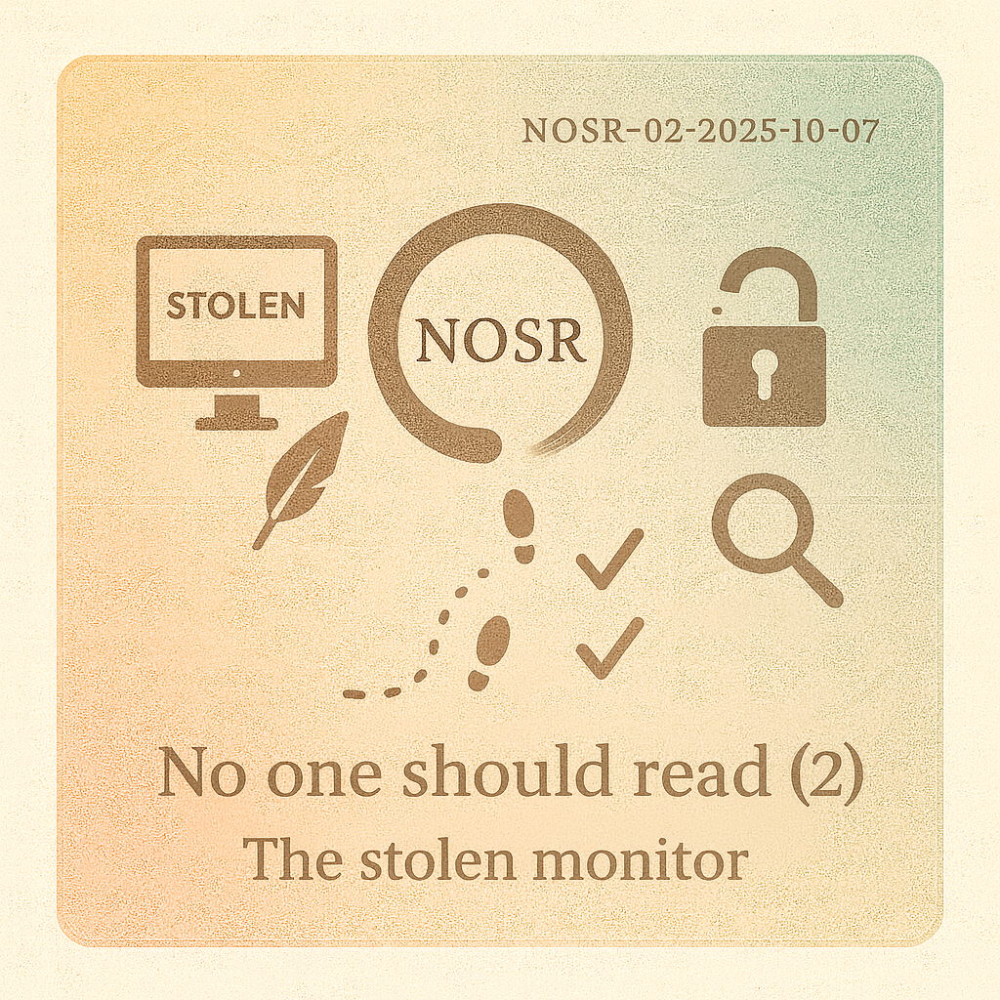

快速链接

NOSR (2): 偷走的屏幕
2025年10月09日
日记本
某个语文老师有一个暴论，写日记能提高写作分数。父母拿我没辙，于是有一年的莫名收到的礼物是一些日记本。断断续续记了两三年。可惜，后来日记本在克利夫兰搬家的时候跟着几个箱子一起丢了。大部分应该是流水账，真情流露的也有，大概是我穿着睡衣，裹着被子，把PSP2000放在枕头边，顶着床头灯，趴在写的。于是，现在偶尔就也会想着写点东西。年纪稍长一些，每次想写，有点冲动和不屑。每次写完，像泄了气的气球，大概归因于目标达成后的抑郁 (Slump)。

总感觉，也期待，自己会慢慢活成小时候的样子。在从小的规训下，大概也算反骨一身。无奈，我现在还在学校，却也拧巴着装成了规训过的状态，理性地权衡些利弊，故作点姿态。以前数学课的老师，自我介绍的时候说自己普通话是甲级二等。但他温州口音很重，又带梗。每次，数学课就是我的语文课，下了课就会模仿数学老师的口音。从没热爱过数学或者编程；可笑，现在成了谋生的利器。以前的偶像大概是铃兰高中的学长，裤链和永远提不上去的裤子；现在搜索记录里都是一些科学家之类的云云。大概算是标准意义上的趋利避害。我想，只要想着改变当下的状态，人都是要拧巴着的。
常听在考试前“战略上要藐视，战术上要重视”的荼毒表述。大概的意思是，考前未雨绸缪，考试挥斥方遒。我大概是想反向吃鸡，就学到了“藐视”二字。到现在也会有一些额外的自信。每当听到“课本上的”，“老师说的”，“以前发生的”，我总本能地不想遵循，近道远抄。生活想要活成电影，AE86也能跑过GTR。
仪式感
现在，我的字奇丑无比。拿笔手写的时候，我的手上的肌肉感觉打结似地抗拒。另外，每次考试前，一翻包，找不到一只笔。可笑的是，小时候学过一长段时间书法。所谓的“童子功”跟我毫无关系。写字的仪式感倒是留了下来。
出门，要先买宣纸。宣纸大概也分三六九等。我经常觉得中间带一个圈的好看，纸感觉重一些。写之前，一张小方桌，要对着窗口。笔墨纸砚，排列整齐。先铺上毛毡，再盖上宣纸。刚买的宣纸不太方便摊平，砚台压在一个角上。毛笔放进水桶里，浸湿泡软。有时等不及，就把毛笔头猛戳在水桶底，乱捅一气。总之，毛笔头最终会像头发丝一样自然散开。倒出墨水，如果那天耐心十足，会象征性地磨两下。一顿操作之后，就会写一下午。一直专注写字是不存在的。我常常写到一半，把毛笔头浸满墨水，然后沿着透明的水桶上沿，从笔头的底部慢慢向外撇，向下施加一些压力。笔头的墨珠，就滴到干净的水桶里的。墨水在水里慢慢散开不同的花纹。我的心思如果随着散开去，时间的单位就是一个下午。
以上描述，大概就是贴切形容了差生文具多。让我现在还总觉得房间里的氛围需要到达一个标准，我才开始工作。当然工作之余的开小差也都留了下来。

偷走的屏幕
在波士顿度过了一个冬天。雪天和雨天一样，对我有特殊的魔力。天空落下来，把一切都要压在一起，就有种被包裹的安全感。像小时候看完鬼片，睡觉前要反复确认棉被紧紧压在手和脚的下面，一条虫的形状。大概是某个过节的晚上。跟朋友发现家里有台游戏机，但没有显示屏。突发奇想，决定去山上的办公室里，暂时借用屏幕。于是，两人整装待发。戴上帽子，眼镜倒是不再起雾，呼出的热气都存在了围脖里。身体裹得厚实，脚上踩着棉鞋，大片的雪，只能看见脚下的路。衣服里的我像是另一个世界，与外界隔绝。大概是一路走着去的，不觉得累。拿上屏幕，充电线，就兴奋地回家，手套也派上了用场。一路下山，屏幕一会就出现在了房间的桌上。游戏大概是生化危机，场景是一辆火车。记不太清了，到最后也一直卡在第一个游戏设定。第二天，就把屏幕还了回去。我想偷走屏幕的时候，下定的应该是通宵的决心。那晚早睡的时候，也不曾想过游戏收场的时间比上山下山的路途还快。
再回波士顿也是一个雪天。是road trip吧。我能记得停完车，去了一家中餐馆，店里没什么人，两个人点了四道菜。老式的中餐馆，店里的灯是红色为主的，倒是有节日的气氛。店里都有暖气，但下雪天的缘故吧，人与人之间总想要本能地凑近一些。谈话的内容也不重要，但言语里都有簇拥的感觉。

湿的，山丘
从没喜欢过早起，也留恋清晨的干净。小时候一次清明节，去乡下扫墓。一大早起来，绝不是自愿。山间小道，满陇云雾。我不认路，就一路随行。白茫茫一片，看不清走在最前面的一伙人。一片茶山，茶树排列整齐，中间隐约一颗老的香榧树，便一路绕树而行。清晨有一股特殊的味道，大概是清甜的土腥味。下山后，云雾自然散去，却也不甚欢喜。
加州的春末会有几场小雨，土丘泛点绿。清晨，也能闻着一样的味道。不过愿意衣锦夜行，后半夜找个没人的山路，车窗外倒也能闻见。